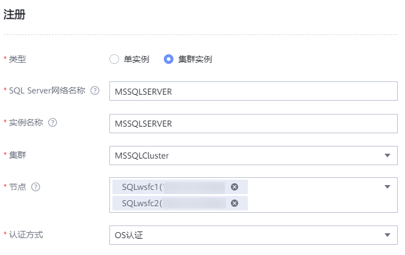
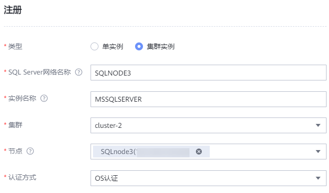

当SQL Server数据库所在主机安装ProtectAgent后，OceanProtect会自动发现SQL Server数据库主机，您需要在管理界面注册数据库，以对其进行保护。
注册SQL Server单实例
- 选择“保护 > 数据库 > SQL Server”。
- 选择“实例”页签。
- 单击“注册”，注册SQL Server。
- “类型”选择“单实例”。
- 配置数据库实例及其认证信息。
相关参数说明如表1所示。
表1 SQL Server单实例注册信息 参数
说明
SQL Server网络名称
当SQL Server实例为单机时，SQL Server网络名称默认为Windows主机名。
实例名称
实例名称需要与生产环境的实例名称保持一致，生产环境默认名称为MSSQLSERVER。
实例名称查询方式如下：
- 登录SQL Server数据库主机。
- 进入Sql Server Configuration Manager管理界面。
- 在服务中查看SQL Server（实例名称）。
主机
选择要注册的数据库主机。
认证方式
支持选择“OS认证”和“数据库认证”，可选择其中任意一种认证方式，配置后OceanProtect备份一体机将通过该方式登录数据库。
- OS认证：基于操作系统的认证。
- 数据库认证：通过数据库管理员用户名和数据库管理员密码进行认证。
数据库用户名
当认证方式选择为“数据库认证”时，展示该参数。
数据库的管理员用户名称。
数据库密码
当认证方式选择为“数据库认证”时，展示该参数。
数据库管理员用户的密码。
- 单击“确定”。
注册SQL Server集群实例
前提条件
注册SQL Server集群实例前，由于采用主节点备份，不支持备节点Copy Only备份方式，所以请确保集群中每个数据库主机已进行注册。
要求集群中所有节点的数据同步。
操作步骤
- 创建集群。
- 在SQL Server页面选择“集群”页签。
- 单击“注册”。
- 在“注册”页面，自定义集群名称，并选择集群节点。
- 单击“确定”。
- 注册集群实例。
- 在SQL Server页面选择“实例”页签。
- 单击“注册”。
- “类型”选择“集群实例”。
- 配置数据库实例及其认证信息。
相关参数说明如表2所示。
表2 SQL Server集群实例注册信息 参数
说明
SQL Server网络名称
- 当SQL Server实例为AlwaysOn可用性组时，SQL Server网络名称默认为Windows主机名。
- 当SQL Server实例为Windows Server 故障转移群集（WSFC集群）时，SQL Server网络名称为搭建WSFC集群时自定义的SQL Server Network Name取值。
SQL Server Network Name查询方式如下：
- 登录集群下任意SQL Server数据库主机。
- 使用数据库管理员账户登录Microsoft SQL Server Management Studio。
- 选中主机，右键选择“Properties”
- 在弹出的Server Properties界面中查询Name参数取值。
实例名称
实例名称需要与生产环境的实例名称保持一致，生产环境默认名称为MSSQLSERVER。
实例名称查询方式如下：
- 登录SQL Server数据库主机。
- 进入Sql Server Configuration Manager管理界面。
- 在服务中查看SQL Server（实例名称）。
集群
选择要注册的数据库集群。
节点
数据库实例所在的主机。
认证方式
支持选择“OS认证”和“数据库认证”。
- OS认证：基于操作系统的认证。
- 数据库认证：通过数据库管理员用户名和数据库管理员密码进行认证。
数据库用户名
当认证方式选择为“数据库认证”时，展示该参数。
数据库的管理员用户名称。
数据库密码
当认证方式选择为“数据库认证”时，展示该参数。
数据库管理员用户的密码。
- 单击“确定”。
相关操作
- 若集群类型为WSFC集群时，选择节点时需要选择所有节点。

- 若集群类型为可用性组时，需要将集群的每个节点，逐一注册为集群实例。
